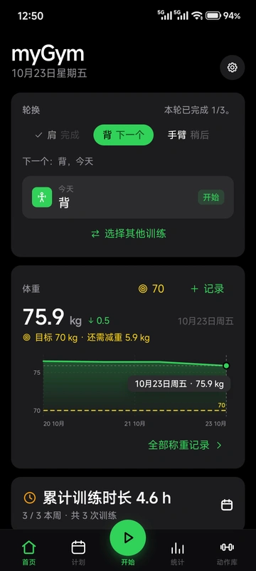

01
训练计划
安排每周训练或循环计划，复用和编辑自己的训练内容。
基于 openGym 二次开发的个人健身应用
myGym.
从今天的训练，到长久的坚持。
用 myGym 安排计划、记录每一组、回看每一次进步。
在开源基础上，打造更符合自己习惯的训练工具。

01 / FEATURES
从安排到回顾，让每一步都有条理。
基础训练能力延续 openGym，细节围绕日常使用改进。
安排每周训练或循环计划，复用和编辑自己的训练内容。
记录重量、次数与组数，配合休息计时，专注完成当下这一组。
查看训练历史、动作进度与累计训练时长，回看自己的积累。
搜索动作、阅读中文要领，编辑或隐藏内置动作，保存筛选偏好。
02 / INSIDE MYGYM
真实界面，不止于概念。
点击截图可放大查看。
← 左右滑动查看更多界面 →
今天练什么，一眼就知道。
让训练安排跟上自己的节奏。
每一次完成，都有迹可循。
从训练历史，看见长期变化。
按自己的习惯整理动作库。
截图来自本地 myGym Web 界面，使用隔离的演示数据，并非个人训练成绩。为尊重第三方媒体许可，截图未展示动作演示图片；Android 系统外观可能不同。
03 / BUILT ON OPENGYM
基于 openGym 1.4.1，对比涵盖 myGym v1.0.0 与 v1.1.0 已发布改动。
明确区分原有能力与二次开发的改动。
计划、记录、备份、同步、多数统计及教练基础能力来自原版。myGym 在此基础上改进动作整理、中文体验与教练个性化；下表区分基础调整和 v1.1.0 更新。
| 改动范围 | openGym 原版 | myGym 的实际变化 |
|---|---|---|
| v1.1.0教练交互 | 沿用上游教练和计划能力 | 默认进入训练问答，需要修改计划时再选择“调整计划”；计划须确认后才应用。 |
| v1.1.0可控长期记忆 | 沿用原有问卷与训练上下文 | 可手动保存、编辑或清空长期训练备注；聊天不会自动写入长期记忆。记忆随咨询发送给所选供应商。 |
| v1.1.0教练动作偏好 | 保留原有器械与历史动作筛选基础 | 可搜索并设置偏好、避开动作；普通候选排除避开或隐藏项，相关历史动作仅作分析上下文。结构化计划会校验明确避开的动作。 |
| v1.1.0供应商配置 | 沿用原有教练供应商机制 | 新增 DeepSeek、Kimi、智谱 GLM、MiniMax、星火、混元及豆包配置入口，需自行配置有效账户、密钥和模型；未逐一验证在线调用。 |
| v1.1.0中文与更新入口 | 保留已有用户语言偏好与手动安装方式 | 首次安装默认简体中文；教练动作名使用中文或个人改名，保留英文名称偏好。应用内“前往官网检查更新”直达版本页。 |
| 新增动作库个人管理 | 支持自建动作与临时筛选 | 增加内置动作编辑、隐藏与恢复；保存筛选范围、调整标签顺序。 |
| 扩充中文动作资料 | 已有部分中文训练要领 | 为 5632 个内置动作补齐中文简介与要领；新增机器译文仍需逐条校对。 |
| 调整时长与统计展示 | 摘要显示连续周数 | 改为累计训练时长，仅计算有有效起止时间的已完成训练；动作进度卡片前移。 |
| 新增进度照片操作 | 保留原有照片时间线 | 查看器增加删除与替换；替换保留训练归属和其他附件。 |
| 移除器械管理入口 | 可管理器械场景、杠铃片和哑铃库存 | 移除这些管理界面；旧配置仍可能影响筛选和重量选择。 |
| 调整Android 更新 | 原版应用内更新流程 | 关闭应用内更新，后续获取正式 APK 手动覆盖安装。 |
v1.0.0 的动作库、中文资料、统计与照片改动继续保留。v1.1.0 使用教练需自行配置供应商；服务器配对模式需同步更新后端。请勿在教练记忆中填写密码或 API 密钥；清空记忆不会删除先前聊天或供应商记录。实际覆盖安装与个人数据保留仍需真机验收。
查看 v1.1.0 完整更新说明与安装须知 →阅读完整改动说明与已知限制 ↗04 / THE STORY
一个开源项目，也是一件长期使用的工具。
让真实的训练习惯，决定下一步改什么。
训练的基础能力已经很完整，但动作整理、中文阅读与训练摘要，还可以更贴近日常习惯。
复用原项目的训练与数据体系，调整品牌，增加动作管理和筛选偏好，补齐中文资料。
改进累计时长、统计信息位置与照片操作；围绕数据保留、同步和备份进行回归检查。
继续校对中文术语、验证正式版迁移和覆盖升级，完善旧器械配置的维护方式。
05 / UNDER THE HOOD
依据项目实际依赖和配置。
官网本身只使用 HTML、CSS 和 JavaScript。
应用界面与构建
应用状态管理
Android 原生封装
可选自托管 API
个人动作编辑作为覆盖数据保存，保留原始动作 ID；中文说明随应用提供，运行时不调用翻译服务。
06 / OPEN SOURCE, WITH THANKS
感谢 Duarte Santos 与 openGym 的贡献者。
myGym 是独立的个人二次开发项目，延续原项目开放代码的基础。
openGym — Copyright (C) 2026 Duarte Santos.
项目代码遵循 GNU AGPL v3，保留原作者版权与第三方声明。动作媒体拥有独立许可，不属于代码许可证的授权范围；本官网不分发这些媒体。